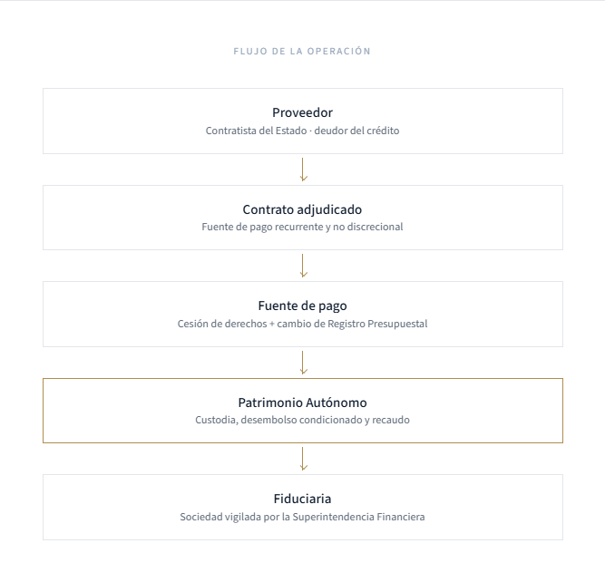

CRÉDITO ESTRUCTURADO
Capital de trabajo diseñado a la medida del flujo de caja, los tiempos operativos y el ciclo de ejecución de cada contrato.
FINANCIACIÓN DE PROVEEDORES DEL ESTADO
Capital de trabajo estructurado para ejecutar contratos públicos ya adjudicados con mayor liquidez, rapidez y seguridad jurídica, administrado a través de una estructura fiduciaria especializada.
QUIÉNES SOMOS
Ánkora administra recursos de inversionistas para otorgar crédito estructurado de corto plazo a proveedores que ejecutan contratos esenciales y recurrentes con el Estado colombiano.
No financiamos consumo. Financiamos contratos públicos ya adjudicados mediante una estructura fiduciaria especializada, evaluando el contrato y su fuente de pago.
SECTORES PRIORIZADOS
PAE | Vigilancia | Salud | Servicios esenciales
VEHÍCULO
Patrimonio Autonómo bajo fiducia mercantil
CONTRAPARTE PAGADORA
El Estado, en gasto esencial y no discrecional
POR QUÉ EXISTE ÁNKORA
El proveedor gana el contrato y debe ejecutarlo por completo durante 60 a 120 días antes de que la entidad pública pague. La banca evalúa al deudor en lugar del contrato, con tiempos incompatibles con el ciclo de ejecución.
Contrato público adjudicado en SECOP, listo para ejecución.
La operación exige capital de trabajo desde el primer día.
Ejecución, interventoría y ciclo de pago de la entidad.
Tiempos de aprobación incompatibles con el contrato.
Crédito estructurado a la medida del contrato.
La desatención de esta necesidad empuja a un número significativo de proveedores hacia el crédito informal, con tasas cercanas al 5% mensual.
NUESTRA SOLUCIÓN
Capital de trabajo diseñado a la medida del flujo de caja, los tiempos operativos y el ciclo de ejecución de cada contrato.
Análisis especializado de cinco pilares: contrato y fuente de pago, contratista, capacidad logística, nivel de ejecución y análisis crediticio.
Recursos, créditos y fuentes de pago administrados de forma segregada mediante fiducia mercantil.
Opera como una capa líquida de protección.
¿CÓMO FUNCIONA?
Radicación del contrato adjudicado y validación inicial del contratista.
Estudio de la asignación presupuestal, la fuente de pago y la capacidad de ejecución.
Aprobación del Comité de Crédito y diseño del esquema de financiación a la medida del contrato.
Cesión de derechos económicos y cambio del Registro Presupuestal a favor del Patrimonio Autonómo.
Desembolso al proveedor en aproximadamente 7 días desde la aprobación.
La entidad paga directamente a la fiducia por cesión de derechos, cerrando el ciclo.
POR QUÉ NUESTRO MODELO ES DIFERENTE
| Dimensión | BANCA TRADICIONAL | ÁNKORA |
|---|---|---|
| Tiempo | Incompatible con el ciclo de ejecución del contrato | Desembolso en ~7 días |
| Análisis | Scoring centrado en el balance del deudor | Contrato, fuente de pago y capacidad de ejecución |
| Garantías | Reales o codeudores tradicionales | Cesión de derechos + RP + Fondo de Afianzamiento |
| Especialización | Producto genérico y multipropósito | Una sola clase de activo, un solo tipo de pagador |
| Velocidad | Procesos de aprobación prolongados | Estructura calibrada para un único tipo de operación |
| Conocimiento del sector | Sin dominio del ciclo de contratación estatal | Conocimiento operativo del SECOP y la interventoría |
LA ESTRUCTURA QUE PROTEGE CADA OPERACIÓN

IMPACTO
Ánkora es, ante todo, un vehículo de inversión que busca retorno ajustado por riesgo. El mismo criterio de originación que protege al inversionista concentra la cartera en contratos con un componente social significativo. Al financiar contratos esenciales, se fortalecen programas como:
GOBIERNO CORPORATIVO
MIEMBRO INDEPENDIENTE
Más de 30 años en finanzas corporativas, M&A, tesorería, crédito y mercado de capitales. VP Senior en WaterEquity; ex-Directora en Global Partnerships y CFO Latam en PayU. International MBA — IE Business School.
MIEMBRO INDEPENDIENTE
Más de 30 años en servicios financieros y financiación estructurada. VP de Desarrollo de Negocios en la Financiera de Desarrollo Nacional (FDN); 20 años en Grupo Bancolombia, Presidente de Suleasing Internacional.
PREGUNTAS FRECUENTES
Una vez aprobada la operación por el Comité de Crédito y constituida la fuente de pago, el desembolso al proveedor se realiza en un plazo aproximado de 7 días.
Contratos de bienes y servicios esenciales y recurrentes con el Estado, ya adjudicados. Priorizamos Vigilancia y Seguridad, y PAE, sin restringirnos a ellos: el modelo aplica a otras categorías esenciales del mercado financiable.
Sí. El mercado objetivo es descentralizado y fragmentado a nivel nacional; la elegibilidad depende de la calidad del contrato y su fuente de pago, no de la ubicación geográfica.
Los recursos se administran a través de un Patrimonio Autónomo constituido mediante fiducia mercantil, gestionado por una sociedad fiduciaria vigilada por la Superintendencia Financiera de Colombia. Ánkora actúa como gestor (GP) de la estrategia.
Un contrato estatal vigente o en legalización con fuente de pago viable, capacidad operativa y experiencia demostrable ejecutando contratos públicos, y disposición a constituir la cesión de derechos económicos y el cambio de Registro Presupuestal.
CONTACTO
Comparta la información de su contrato para iniciar el análisis, o solicite el Investment Memorandum y el modelo financiero para revisión conjunta.